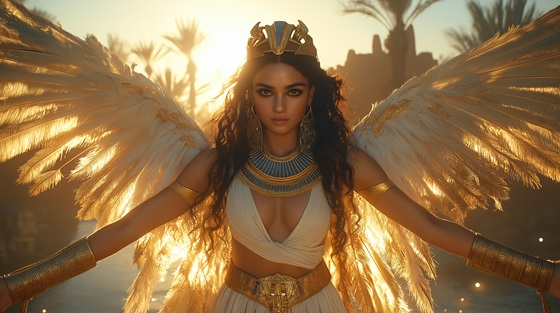

Travel into the heart of ancient myth with this haunting gothic metal ballad for Isis, the goddess of magic, motherhood, and eternal love. This song is a powerful tribute to the divine queen who defied death itself to resurrect Osiris and give birth to the future king, Horus.
Who is Isis?
One of the most revered deities in Egyptian mythology, Isis was a goddess of healing, life-giving power, and sacred magic. After her husband Osiris was murdered and dismembered by Seth, she searched the earth for his remains, restored him using divine spells, and bore their son, Horus, who would avenge his father and reclaim the throne.
Isis is often depicted with wings spread wide, a throne glyph upon her head, or with the ankh and papyrus scepter, embodying maternal devotion and magical mastery.
Isis: Queen of Magic
By the tears I wept in endless night
I gathered stars and gave them light
From broken flesh, I called his name
From scattered dust, I forged his flame
My wings a veil across the sky
My words enchant, my will defies
For death may steal the breath away
But not the soul I swore to save
With every spell, I fight the end
A queen, a wife, a god, a friend
I am Isis — voice of dawn
The silent strength that carries on
Through loss and death, I find the way
To lift the dark and shape the day
Queen of magic, love’s decree
I breathe the gods to life through me
In shadowed halls, I searched alone
Where whispers chill the blackest stone
Each piece of him I held with grace
A sacred rite, a lover’s faith
With sacred breath, I sealed the vow
To birth the heir, to heal the crown
And though the gods may look away
I cast my words, and bend their sway
With every spell, I fight the end
A queen, a wife, a god, a friend
I am Isis — voice of dawn
The silent strength that carries on
Through loss and death, I find the way
To lift the dark and shape the day
Queen of magic, love’s decree
I breathe the gods to life through me
No throne is built without the pain
No child of gods walks free of strain
Yet I endure through time’s decay
In every prayer, they speak my name
My wings still stretch from dusk to rise
My touch still soothes, my gaze still guides
A goddess born of grief and flame
Yet in that grief, I found my name
With every spell, I fight the end
A queen, a wife, a god, a friend
I am Isis — voice of dawn
The silent strength that carries on
Through loss and death, I find the way
To lift the dark and shape the day
Queen of magic, love’s decree
I breathe the gods to life through me
From love I made a legacy
A kingdom born of prophecy
My words, my will, my sacred breath
Can raise the dead and silence death
So speak my name when hope runs thin
The spell begins, the dawn breaks in
I am Isis, in dusk or day
The queen whose magic lights the way